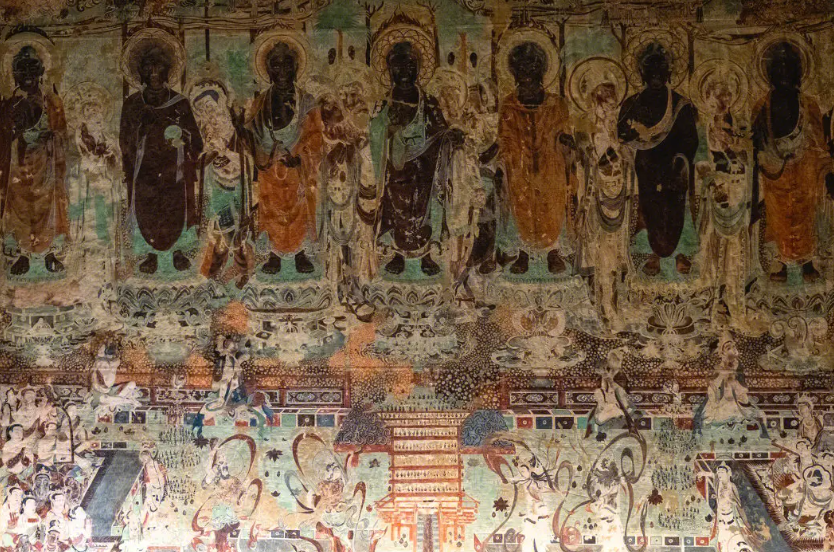
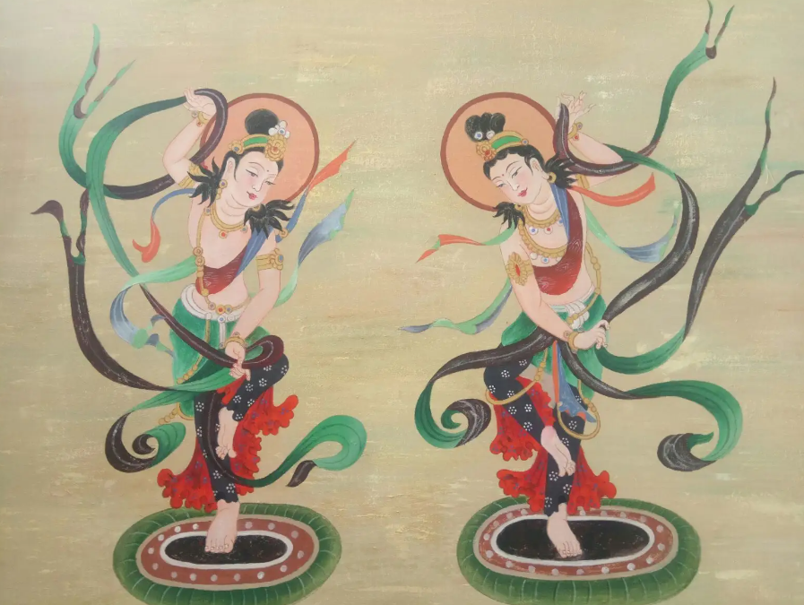

胡旋舞
唐代开元、天宝年间，从西域传入的胡旋舞风靡一时。全国上下都在学这种“旋转、跳跃，不停歇”的舞蹈，其中有一位绝对意义上的“重量级”选手——在该项目上有先天优势的安禄山，史载他在唐玄宗李隆基面前跳胡旋舞“疾如风焉”
胡旋舞起源于中亚的康国，大致位于今天乌兹别克斯坦的撒马尔罕一带，是粟特人建立的国家之一。粟特人是中世纪生活在中亚河中地区的一个民族，他们曾建立多个城邦国家。除宗主国康国外、还有安国、米国、史国、石国、何国、曹国、火寻、戊地八国，这些国家的人在中国史书上被称为“昭武九姓”。
魏晋以后，丝绸之路日益繁荣。大量粟特人沿丝绸之路来到中国，成为中国与西方进行交易的中间商，胡旋舞大概就是这时传入的。
胡旋舞以轻盈、快速的连续旋转取胜，很多时候必须在一块叫作“舞筵”的小圆毯子上碾转腾踏，而且舞蹈过程中不能转出这块小圆毯。在敦煌莫高窟，保留着不少表现胡旋舞的唐代壁画，无一例外舞者都是在一个四周带有联珠纹图案的小圆毯子上。联珠纹图案源自萨珊波斯，经中亚地区传入中原，粟特人经常向唐朝进献这种舞筵。
胡旋舞的道具除了来自西方的小圆毯子，还有舞者手里长长的丝绸带子，它们可是妥妥来自东方的中原，是丝绸之路上西传的热门商品。无论是龙门石窟唐代洞窟石壁上跳胡旋的女子，还是宁夏盐池县出土的7世纪末前后粟特人墓葬浮雕里的胡旋男子，都是手持丝绸长带旋转起舞的样子。画面上当空飘举的绸带，仿佛就是白居易诗句“回雪飘飖转蓬舞”的再现。

